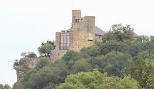
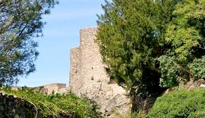
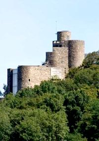
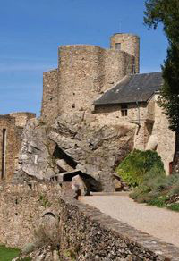
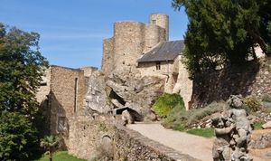

Recensement Jean-Claude Truffet
| Département | 81 — Tarn |
| Canton | Réalmont |
| Commune | Paulinet |
| Type d'édifice | Château |
| Période d'origine | XIII-XVIII |





PAULIN, Juché sur son nid daigle le château veille sur la seigneurie de Paulin, lune des plus anciennes et des plus importantes du Languedoc. Au XIe siècle, le fief de Paulin dépend du Vicomte de Lautrec. Au XIIIe siècle, Guillaume de Paulin prend parti pour lhérésie des Albigeois. Ses biens sont confisqués et attribués aux Lautrec qui prennent en 1225 le titre de barons de Paulin. En 1288, la baronnie de Paulin possède 32 seigneurs vassaux et sétend de Lafenasse à la vallée du Tarn et aux sources du Dadou. En 1327, Paulin passe entre les mains des Rabastens et devient une vicomté. A partir de 1337, la guerre de cent ans amène des mercenaires Anglais mettant à sac la vicomté. En 1389, Guillaume de Rabastens, vicomte de Paulin, sallie au comte de Foix, pour résister au roi de France. Le vicomte de Paulin, marquis de Rabastens est tué à Rasisse par le baron Règnes. Après la mort du dernier marquis de Rabastens, vicomte de Paulin, en 1606, le château et la vicomté de Paulin passèrent par héritage à la famille Carrion de Nisas. Sa veuve, Madeleine de Vignolles, qui a hérité de la demeure, se remarie en 1626 avec Charles de Latour-Gouvernet. Des contestations de successions font quen 1682 le château de Paulin était complètement ruiné, au XXe siècle, il est la propriété des familles Gillet et Belaut jusquen 1979, Dumoussaud et depuis 1986 à M. James Buchanan à qui lon doit la restauration intégrale du site.
Paulin, siège principal d'une des plus importantes seigneuries du Languedoc ; grande construction fortifiée, remontant au Xe siècle. ce château dominant toutes les hauteurs qui l'environnent, bâti sur un rocher et en partie adossé au roc lui-même, qui l'abrite au couchant et lui sert de bouclier, il a ses murs perpendiculaires au rocher, lui-même à la rivière d'0ulas, sur les bords de laquelle il s'élève à plus de 100 mètres de hauteur. Le fort, abordable seulement d'un côté, était défendu par des rochers servant d'avant-garde et favorisant la première résistance. Sur les autres côtés, le rocher qui lui sert d'assiette accompagne ses murs jusqu'à la toiture. Les pans de muraille à découvert sont crénelés ; restes considérables ; deux tours en parties ruinées. A l'intérieur, salle de grande dimension , cuisine creusée dans le roc, grand escalier en coquille et en pierre, fenêtres cruciformes en pierre de taille élégamment sculptée. Sur une des cheminées, on voit encore sculpté un lion (les Rabastens, portaient un lion dans leurs armes).
Au-dessous du château, prison taillée dans le roc, éclairée par une simple lucarne, où l'on arrive par un sentier obscur et étroit, descendant à pic, dont les abords inspirent un véritable sentiment d'effroi.
Familles Charles de Latour de Gouvernet.
"
Château de Paulin à Paulinet